2110C50 gear selection and engagement unit - r r
- Path
- Procedures > 21 GEARBOX > 2110 MANUAL GEARBOX AND DIFFERENTIAL > 2110C gear cases and covers of manual gearbox with differential > 2110C50 gear selection and engagement unit - r r
- Kind
- repair procedure (removal / refitting; the operation number is the code)
- Applies to
- engines: 1.6 TS , 1.8 TS, 2.0 JTS, 2.5 V6, 3.2 V6, 1.9 JTD 8v , 1.9 JTD 16v, 2.0 JTS, 2.4 JTD 10v, 2.4 JTD 20v; all production periods
- Interactive page
- https://sloeber94.github.io/elrnDB-a156/en/#/3237928
Applies to: engines: 1.6 TS , 1.8 TS, 2.0 JTS, 2.0 JTS; all production periods
 Removing
Removing
 Refitting
RefittingPlace the car on the lifting bridge.
4450B10 Front WHEEL (one) - R.R.
5530B52 Battery DRIP TRAY/SUPPORT - R.R.
1. Disconnect the two flexible shafts of gear selection and engagement from linkage support and return mount, by removing stop brackets and disconnecting heads from their operation levers.
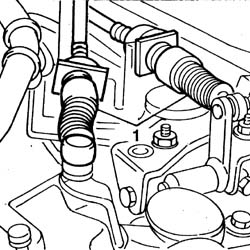
Applies to: engines: 1.6 TS , 1.8 TS, 2.0 JTS, 2.0 JTS; all production periods
1. Unscrew fixing screws of gear selection and engagement unit positioned under guard.
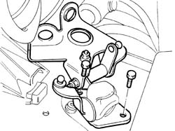
Applies to: engines: 1.6 TS , 1.8 TS, 2.0 JTS, 2.0 JTS; all production periods
1. By acting from LH wheelhouse compartment unscrew screws fixing gear selection and engagement unit to gearbox, then remove it from engine compartment.
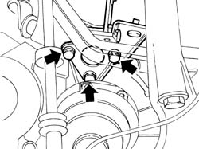
Applies to: engines: 1.6 TS , 1.8 TS, 2.0 JTS, 2.0 JTS; all production periods
Refitting
RemovingPosition gear selection and engagement unit.
Fix assembly to gearbox and position guard.
By acting from wheelhouse compartment, fix gear selection and engagement unit to gearbox.
Connect gear selection and engagement flexible shafts to their operation levers, then insert stop brackets.
4450B10 Front WHEEL (one) - R.R.
Applies to: engines: 2.5 V6, 3.2 V6, 1.9 JTD 8v , 2.4 JTD 10v; all production periods
Removing
Refitting5530B52 Battery DRIP TRAY/SUPPORT - R.R.
5550D22 reversing light switch - r+r
1. Disconnect the gear selector and engagement cables.
2. Undo the bolts (2a) and remove the mounting bracket (2b) complete with gear selector and engagement cables.
3. Undo the bolts (3a) and remove the gear selector and engagement unit (3b).
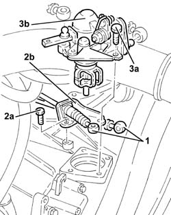
Applies to: engines: 2.5 V6, 3.2 V6, 1.9 JTD 8v , 2.4 JTD 10v; all production periods
Refitting
Removing1. Fit the gear selector/engagement unit (1a) and fix it with the bolts (1b).
2. Place the mounting bracket (2a) back in its housing complete with gear selector/engagement cables (2b) and fix it with the bolts (2c).
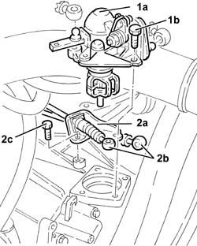
Applies to: engines: 2.5 V6, 3.2 V6, 1.9 JTD 8v , 2.4 JTD 10v; all production periods
Position the gear lever in neutral and move it completely towards the right.
1. Loosen the adjustment nut for the gear selector/engagement unit.
2. Fit the tool under the gear engagement cable attachment ball.
 | Name | Country |
|---|---|---|
2 | Spacer | 1.860.974.000 |
3. Connect the gear selector/engagement cables.
Tighten the adjustment nut.
Remove the spacer.
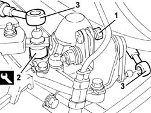
Applies to: engines: 2.5 V6, 3.2 V6, 1.9 JTD 8v , 2.4 JTD 10v; all production periods
5550D22 reversing light switch - r+r
Applies to: engines: 1.9 JTD 16v; all production periods
Removing
RefittingProceed with removal 1016A10 sound-proofing cover - r + r .
Proceed with removal 5530B10 battery - r+r .
Proceed with removal 5530B52 Battery DRIP TRAY/SUPPORT - R.R. .
1. Disconnect the electrical connection from the reversing lights switch.
 | Name | Connector |
|---|---|---|
1 | Reversing lights switch |
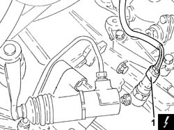
Applies to: engines: 1.9 JTD 16v; all production periods
1. Disconnect the gear selector and engagement cables.
2. Undo the fastenings (2a) and move the mounting brackets (2b) complete with gear selector and engagement cables aside.
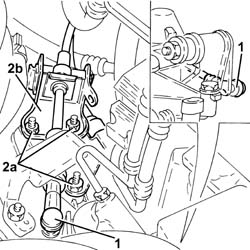
Applies to: engines: 1.9 JTD 16v; all production periods
1. Undo the bolts (1a) and remove the gear selector and engagement assembly (1b).
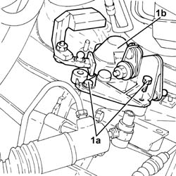
Applies to: engines: 1.9 JTD 16v; all production periods
Refitting
RemovingPlace the gear selector and engagement unit back in its housing and secure it using the bolts.
Place the mounting bracket, complete with gear selector and engagement cables, back in its housing.
1. Position the gear lever (1a) in contact with the reverse inhibition wall (1b).
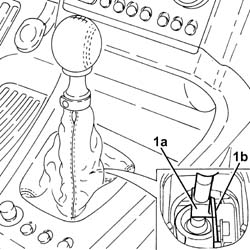
Applies to: engines: 1.9 JTD 16v; all production periods
1. Loosen the adjustment nut on the gear selector and engagement assembly.
2. Position the spacer tool under the gear engagment lever.
| Name | Country |
|---|---|---|
2 | Spacer | 1.870.974.000 |
3. Connect the gear selector cable.
Tighten the adjustment nut on the gear selector and engagement assembly.
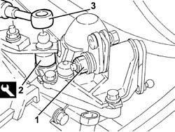
Applies to: engines: 1.9 JTD 16v; all production periods
Position the gear lever in Reverse position and remove the tool located under the gear engagement lever.
| Name | Country |
|---|---|---|
- | Spacer | 1.870.974.000 |
Place the gear lever in 'neutral'.
Connect the gear engagement cable.
Connect the electrical connection to the reversing lights switch.
Proceed with refitting 5530B52 Battery DRIP TRAY/SUPPORT - R.R. .
Proceed with refitting 5530B10 battery - r+r .
Proceed with refitting 1016A10 sound-proofing cover - r + r .
Applies to: engines: 2.4 JTD 20v; all production periods
Removing
RefittingPosition the vehicle on the ramp
Proceed with removal 1016A10 sound-proofing cover - r + r .
Proceed with removal 5530B10 battery - r+r .
Proceed with removal 5530B52 Battery DRIP TRAY/SUPPORT - R.R. .
Proceed with removal 4450B02 left front wheel r r .
Remove the protective cap on the brake caliper bleed valve.
Connect the collection system (pipe and reservoir) to the bleed valve on the brake caliper.
Loosen the bleed valve on the brake caliper and wait for the brake-clutch reservoir and lines to drain.
1. Loosen the band and disconnect the air supply hose from the heat exchanger to the inlet manifold, throttle body side.
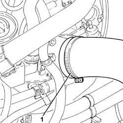
Applies to: engines: 2.4 JTD 20v; all production periods
1. Undo the connectors (1a) and (1b) and remove the rigid pipes from the master cylinder to the hydraulic unit (1c).
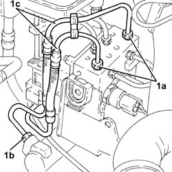
Applies to: engines: 2.4 JTD 20v; all production periods
1. Disconnect the electrical connection from the brake fluid level sensor.
| Name | Connector |
|---|---|---|
1 | Brake fluid level sensor (switch) |
2. Undo the bolts (2a) and lift up the brake fluid reservoir (2b), as necessary.
3. Loosen the band and disconnect the flexible pipe from the brake-clutch fluid reservoir to the clutch master cylinder, reservoir side.
4. Undo the nuts (4a) and remove the brake master cylinder (4b) complete with brake-clutch fluid reservoir (4c) and pipes (4d).
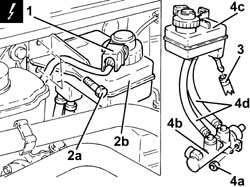
Applies to: engines: 2.4 JTD 20v; all production periods
1. Disconnect the electrical connection from the reversing lights switch.
| Name | Connector |
|---|---|---|
1 | Reversing lights switch |
2. Disconnect the gear selector and engagement cables
3. Undo the bolts (3a) and remove the gear selector and engagement unit (3b).
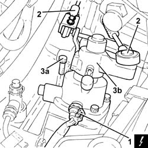
Applies to: engines: 2.4 JTD 20v; all production periods
Refitting
Removing1. Place the gear selection and engagement unit (1a) back in its housing and secure it by tightening the bolts (1b) to the recommended torque.
 | Fastening | Component | Ø | Value (daNm) |
|---|---|---|---|---|
1b | - | - | - | - |
2. Connect the gear selector and engagement cables.
3. Connect the electrical connection to the reversing lights switch.
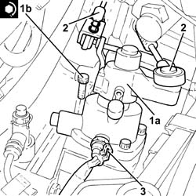
Applies to: engines: 2.4 JTD 20v; all production periods
1. Place the brake master cylinder (1a) complete with brake-clutch fluid reservoir (1b) and pipes (1c) back in its housing, then secure it by tightening the nuts (1d) to the recommended torque.
| Fastening | Component | Ø | Value (daNm) |
|---|---|---|---|---|
1d | - | - | - | - |
2. Connect the flexible pipe from the brake-clutch fluid reservoir to the clutch master cylinder, reservoir side and tighten the band.
3. Place the brake-clutch fluid reservoir (3a) back in its housing and secure it using the bolts (3b).
4. Connect the electrical connection to the brake fluid level sensor.
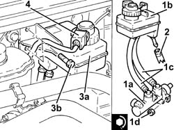
Applies to: engines: 2.4 JTD 20v; all production periods
1. Place the rigid pipes from the master cylinder ot the hydraulic control unit (1a) back in their housings, then tighten the connectors (1b) and (1c) to the recommended torque.
| Fastening | Component | Ø | Value (daNm) |
|---|---|---|---|---|
1b | Connector | PIPE FROM PUMP TO HYDRAULIC CONTROL UNIT | M10 | (Master cylinder side) 1.4 ÷ 1.8 |
| Fastening | Component | Ø | Value (daNm) |
|---|---|---|---|---|
1c | Connector | PIPE FROM PUMP TO HYDRAULIC CONTROL UNIT | M10 | (Master cylinder side) 1.4 ÷ 1.8 |
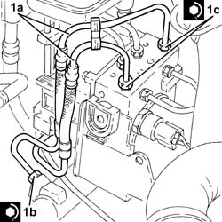
Applies to: engines: 2.4 JTD 20v; all production periods
Proceed with refitting 5530B52 Battery DRIP TRAY/SUPPORT - R.R. .
Proceed with refitting 5530B10 battery - r+r .
Proceed with refitting 1016A10 sound-proofing cover - r + r
Proceed with refitting - 0010T64 brake and or clutch fluid check level and top up as necessary
Proceed with refitting 0010T65 hydraulic brake system bleed air
Proceed with refitting 4450B02 left front wheel r r
Remove the car from the ramps.
Topics linked from this page (9)
- 0010T65 hydraulic brake system bleed air
- 1016A10 sound-proofing cover - r + r
- 4450B02 left front wheel r r
- 4450B10 Front WHEEL (one) - R.R.
- 5530B10 battery - r+r
- 5530B52 Battery DRIP TRAY/SUPPORT - R.R.
- 5550D22 reversing light switch - r+r
- I20 Reversing lights switch
- K25 Brake fluid level sensor (switch)